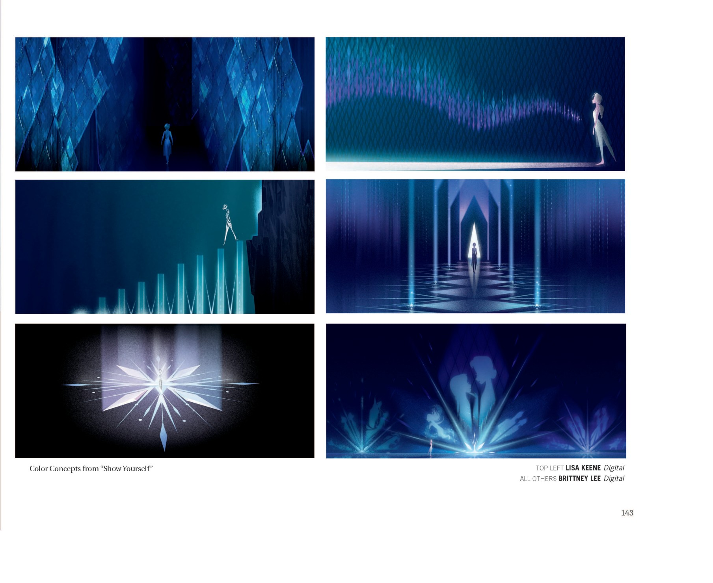

《Polar Nights》中 draugr 趁人熟睡窃取记忆、令白昼变黑夜，象征"被抹去的历史"；唯有"讲述真实故事 (tell her tale)"才能让亡魂安息——呼应 Grand Pabbie 谶语，也直指 Runeard 篡改大坝历史的政治谎言。
""What once did flee, now sets sail / To end this all, you must tell her tale." — 来源：《Polar Nights》· ch.9（Grand Pabbie 谶语）
在《Polar Nights》里，draugr（北欧传说中冰封的亡者）并非普通的鬼怪，而是被恐惧实体化、被历史遗弃者的具象。它们在人熟睡时潜入、窃取记忆，使白昼沦为黑夜——这个意象把"遗忘"写得近乎暴力：当一个人失去记忆，他便失去了自己是谁；当一个民族失去记忆，便失去了它何以存在的依据。被冰封的亡者本身，正是"未被讲述的故事"的肉身：他们无法安息，正是因为真相从未被说出。
这与电影2的政治谎言构成镜像。Runeard 把对北境之灵的侵略改写成了"赠予大坝的善举"，把屠戮北境领袖的行径从历史中抹去，只留下"和平之桥"的纪念碑。官方叙事越是光鲜，被噤声的亡魂就越是躁动。Grand Pabbie 的谶语点破解法：要终结这一切，必须"tell her tale"——把被剥夺者的故事重新讲出来。记忆的归还，即是正义的归还。
艾莎潜入阿塔霍兰、寻回被掩埋的身世，与 draugr 故事共享同一逻辑：被窃取、被篡改的记忆若不被赎回，过去就永远是悬在生者头顶的黑夜。唯有直面并讲述真实，亡者得以安息，生者方能与历史和解。电影1里 Grand Pabbie 出于保护而抹去安娜童年对魔法的记忆，同样是一次"善意版的记忆窃取"——它提示：连爱护也能造成遗忘，真正的疗愈必须建立在完整记忆之上。
来源：《Polar Nights》· 第4节 / 第5节
（来源：《Polar Nights》· 第9节）